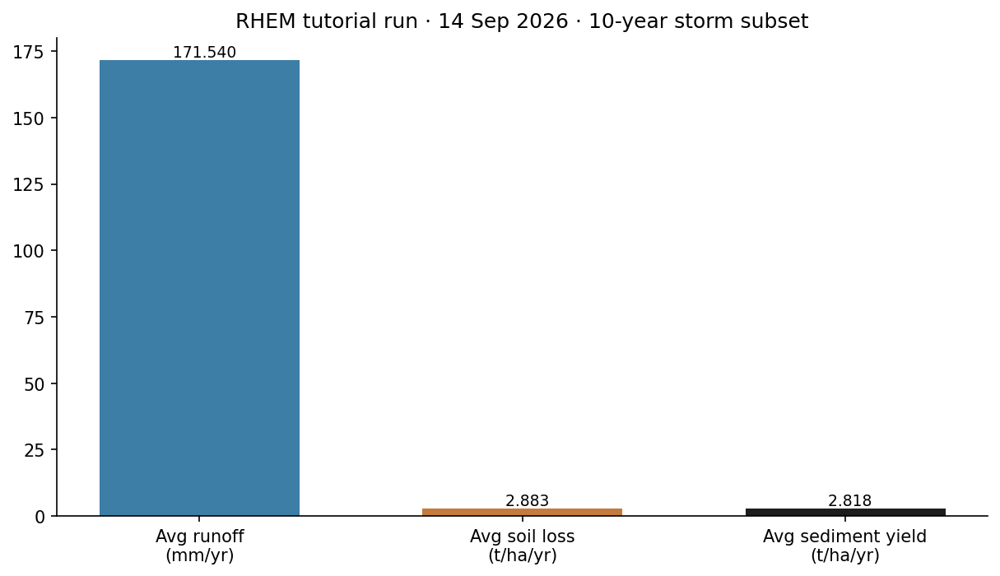
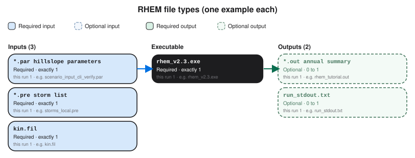

RHEM
A first successful local run of the Rangeland Hydrology and Erosion Model on Windows. You obtain the ARS Tucson engine, convert a CLIGEN storm list to the local .pre format, write a one-line kin.fil, start rhem_v2.3.exe -b kin.fil, and read Avg-Soil-Loss. The RHEM Web Tool is the official public interface; this path is the same Fortran engine the web tool uses.
1. What this model does
RHEM is a process-based, event-scale hillslope model built for rangelands. One storm falls on one slope profile. The engine computes infiltration, runoff, interrill erosion, and concentrated-flow erosion, then reports soil loss and sediment yield for that profile. It is not a cropland watershed network model and it is not an average-annual USLE replacement unless you drive it with a long storm sequence.
The lab’s pinned engine is rhem_v2.3.exe (CLIGEN version). The public face of the model is the RHEM Web Tool at ARS Tucson (v2.5 in 2026). Hernandez et al. (2017) in Water Resources Research is the process paper for V2.3.
2. Get the software
Most users should start at the RHEM Web Tool. ARS lists that application on the software catalog; the web tool itself is not a desktop installer. This lab’s CLI binary is the Fortran engine that sits behind that site. Source for the CLIGEN engine is in the lab tree under installs\RHEM\rhem_engine.
On this host the tree is already at C:\Grok\Models\installs\RHEM (zip in archive\downloads\RHEM.zip, engine sample\rhem_v2.3.exe). If you are repeating the lab path, you can skip the download and use that folder.
3. The lab install
| Piece | Where | First-run role |
|---|---|---|
rhem_v2.3.exe |
sample\ (also copied into the run folder) |
Local CLI engine. Batch mode is -b kin.fil. |
scenario_input_cli_verify.par |
api_verify\ |
Hillslope parameters: length, slope, erodibility, cover. |
storm_input_cli_verify.pre |
api_verify\ |
CSIP/CLIGEN storm list. Convert before the local exe will read it. |
csip_pre_to_local.py |
scripts\ |
Converts the CSIP .pre to the local storm-list format. |
tools\test_all_models.ps1 calls rhem_local_cli.ps1 against cli_local. The tutorial wrapper below uses a disposable folder so that standing output stays untouched.
4. Novice path: run a 10-year storm subset
Copy the engine and the .par file, convert the first ten years of storms, write kin.fil, then start the engine in batch mode.
python C:\Grok\Models\tools\run_rhem_tutorial_verify.py
That wrapper is the verified path. The engine line it runs is:
.\rhem_v2.3.exe -b kin.fil
The local exe does not read the CSIP .pre as-is. Convert it first. kin.fil is one line: parameter file, storm file, output file, a label, then timestep and flags.
5. Confirm the run
Open rhem_tutorial.out and find the annual-average block.
| Check | Where | This verification (14 Sep 2026) |
|---|---|---|
| Average runoff | Avg-Runoff(mm/year) |
171.54033 mm/yr |
| Average soil loss | Avg-Soil-Loss(ton/ha/year) |
2.88282 t/ha/yr |
| Average sediment yield | Avg-SY(ton/ha/year) |
2.81812 t/ha/yr |
The automated test is test_tutorial_run inside tools\run_rhem_tutorial_verify.py. It requires average soil loss equal to 2.88282 t/ha/yr within 0.001. That is the same number test_all_models.ps1 reads from the standing 10-year cli_local output, pointed at a new folder.
6. This verification’s figure
The 14 Sep 2026 run used the west-Illinois CLI verify storms, years 1–10, on a 30 m, 10% plane. Average runoff is 171.54 mm/yr. Average soil loss is 2.88 t/ha/yr. Average sediment yield is 2.82 t/ha/yr.

installs\RHEM\tutorial_run_20260914. Three annual-average numbers from rhem_tutorial.out.Model Input and Output
Each bubble is one file type. Solid bubbles are required (at least one must be present). Dashed bubbles are optional. Same-type files that only change location or ID are shown once, with how few and how many a run can hold.

Executable
rhem_v2.3.exe
Required. How many: exactly 1. This run: 1. Example: rhem_v2.3.exe.
This is the local Fortran engine (CLIGEN version). One copy. Start it with -b kin.fil in the folder that holds the parameter and storm files.
Input files
*.par hillslope parameters
Required. How many: exactly 1. This run: 1. Example: scenario_input_cli_verify.par.
This is the hillslope parameter file: length, slope, erodibility, cover, and particle sizes. One .par file per scenario. Open the example file in the verification folder to see that layout on disk.
*.pre storm list
Required. How many: exactly 1. This run: 1. Example: storms_local.pre.
This is the storm list the local engine reads: one row per event after CSIP conversion. One .pre file per run. Open the example file in the verification folder to see that layout on disk.
kin.fil
Required. How many: exactly 1. This run: 1. Example: kin.fil.
This is the batch control line: parameter file, storm file, output file, label, and flags. One kin.fil per batch. Open the example file in the verification folder to see that layout on disk.
Output files
*.out annual summary
Optional. How many: 0 to 1. This run: 1. Example: rhem_tutorial.out.
This is the annual-average summary. One .out file. Avg-Soil-Loss is the number the tutorial checks. Open the example file in the verification folder to see that layout on disk.
run_stdout.txt
Optional. How many: 0 to 1. This run: 1. Example: run_stdout.txt.
This is console text captured from rhem_v2.3.exe. One capture. The science numbers live in the .out file. Open the example file in the verification folder to see that layout on disk.
7. After the first success
Once that block prints, you can lengthen the storm list, change LEN and SL in the .par file, or use the Web Tool for cover and soil parameter estimation. Building a new rangeland site from NRI data is a different lesson. This one stops at a verified local CLI run.